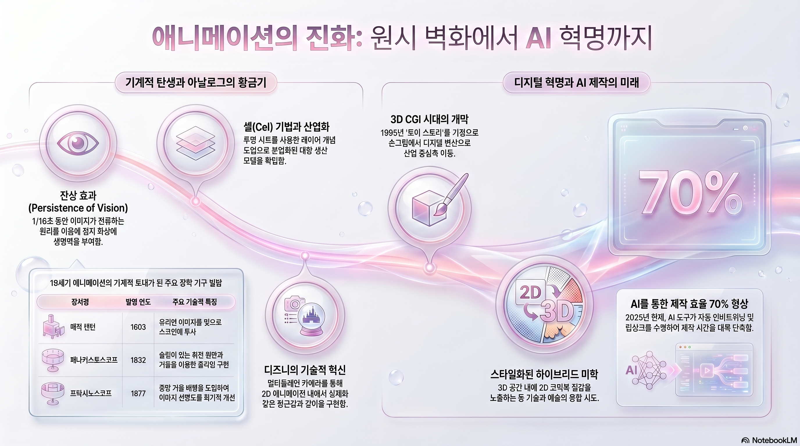

꺾이지 않는 기둥으로
그리는 진심
세상을 깊이 사유하며 창작의 가치를 믿는 창작자입니다. 일상에서 선량함을 잃지 않으려 노력하는 동시에, 부당함 앞에서는 침묵하지 않고 제가 할 수 있는 일을 실천하며 목소리를 냅니다. 타인의 다양한 입장을 포용하고 이해하려 애쓰면서도, 내면의 중심은 단단하게 지켜내고자 합니다.
애니메이션 교육 체계: 3단계 아키텍처
기초 예술 소양
- 해부학 및 드로잉 원리
- 시각적 문해력(Visual Literacy)
- 스토리보딩 & 타이밍 학습
기술적 심화 (Pipeline)
- 3D CGI 공정 (Maya 중심)
- 파이썬 스크립팅 자동화
- 퍼스낼리티 애니메이션 구현
전문가 융합 기술
- Unreal 버추얼 프로덕션
- VFX 합성 및 캐릭터 FX
- 실시간 엔진 기반 에셋 제작

Animation_History.png placeholderFigure: 애니메이션 기술 및 시각 예술사의 발전 단계 개요
Anima: 기술적 진화의 연대기
잔상 효과와 선사 시대
인간의 망막 잔상 효과(1/16초)를 이용한 움직임의 최초 시도. 쇼베 동굴 벽화와 고대 이란 도자기에서 프레임의 원형 발견.
광학 기구의 황금기 (17~19세기)
매직 랜턴(레이어 개념), 조이트로프, 프락시노스코프 등 기계적 투사 장치 개발. 애니메이션이 대중 매체로 진화.
셀(Cel) 혁명과 산업화 (20세기)
월트 디즈니의 멀티플레인 카메라, 12원칙 정립. TV 시대 리미티드 애니메이션(일본 아니메)의 미학적 탄생.
디지털 & AI 시대 (현재~미래)
3D CGI 패러다임(Pixar), 생성형 AI 도구 및 언리얼 엔진 기반 실시간 가상 제작 시대로의 패러다임 전환.
예술과 삶의 연결고리
나의 시선이 머무는 곳, 그리고 나아가는 방향
1. 관심사: 예술의 총체로서의 애니메이션
저는 영상과 음악, 문학을 아우르는 예술 전반의 감상과 분석에 깊은 관심을 두고 있습니다. 특히 애니메이션은 이 모든 요소가 결합하여 하나의 완벽한 세계를 구축하는 '종합 예술'이라는 점에 매력을 느낍니다. 단순히 시각적인 즐거움에 그치지 않고, 그 속에 담긴 서사와 선율, 연출의 의도를 파고들며 예술적 영감을 얻는 과정은 저에게 가장 큰 즐거움입니다.
2. 강점: 날카로운 분석을 통한 입체적 세계의 설계
저의 가장 큰 강점은 세밀한 관찰력과 이를 바탕으로 한 분석력입니다. 대상을 다각도에서 바라보는 습관은 캐릭터의 내면을 입체적으로 설정하고, 개연성 있는 탄탄한 세계관을 구상하는 밑바탕이 됩니다. 이러한 역량을 발휘하여 전체적인 흐름을 설계하고 조율하는 디렉터로서, 머릿속의 아이디어를 현실적인 이미지와 이야기로 구체화하는 데 강점이 있습니다.
3. 경험과 비전: 인생을 관통하는 가장 순수한 애정
애니메이션은 저의 최초의 기억부터 현재까지 늘 곁을 지켜온 동반자입니다. 인생의 변곡점마다 함께 울고 웃으며 저를 성장시킨 원동력이었기에, 그 누구보다 애니메이션을 깊이 사랑한다고 자부할 수 있습니다. 이러한 순수한 애정과 전공을 통해 쌓은 데이터 활용 능력을 결합하여, 사람들의 마음을 움직이고 새로운 세계를 선사하는 창작의 길을 걷고자 합니다.
AI라는 지렛대로 창의성의 지평을 넓히다
'자본적 재설정'을 통한 생산 탄력성 확보와 미래 애니메이터의 역량 로드맵
생산 탄력성 (Production Elasticity)
AI를 통해 노동 시간과 시각적 결과물 사이의 상관관계를 해체합니다. 과거의 선형적 구조에서 벗어나 창의적 실험의 횟수를 극대화하는 전략적 접근입니다.
협업 지능 (GenAI)
AI를 단순 도구가 아닌 '신경망 렌더링' 파트너로 인식합니다. 로토스코핑과 리깅 등 반복 업무의 60-70%를 자동화하여 아티스트는 본질에 집중합니다.
미래 애니메이터 역량 로드맵
1단계: 본질적 역량 (기초 체력)
실세계 움직임의 정밀 관찰과 수작업 스케치. 장인 정신에 기반한 '유기적 감각' 확보. AI 결과물의 품질을 판단할 수 있는 비판적 안목을 기릅니다.
2단계: 제작 효율성 실험 (융합)
DeepMotion, Runway ML 등의 도구를 기술적 지렛대로 활용. 리깅과 합성 시간을 단축하고, 절약된 시간을 창의적 연출 실험에 재투자합니다.
3단계: 크리에이티브 디렉팅 (확장)
AI를 통해 1인 제작의 한계를 넘어 장편 수준의 비주얼 구현. 고유한 예술적 비전을 바탕으로 전체 파이프라인을 총괄하는 '감독형 인재'로 거듭납니다.
미래 지향점: 독창적 사유와 연대의 미학
저는 대학원 진학 및 해외 유학을 통해 학술적 탐구를 지속하고자 합니다. 미국(CalArts)과 프랑스(GOBELINS)의 교육 환경에서 글로벌 흐름을 익히고, 한국인 여성이자 부산이라는 지역성을 뿌리로 삼아 비주류와 약자들에게 힘이 되는 서사를 구축할 것입니다.
시각적 지향점